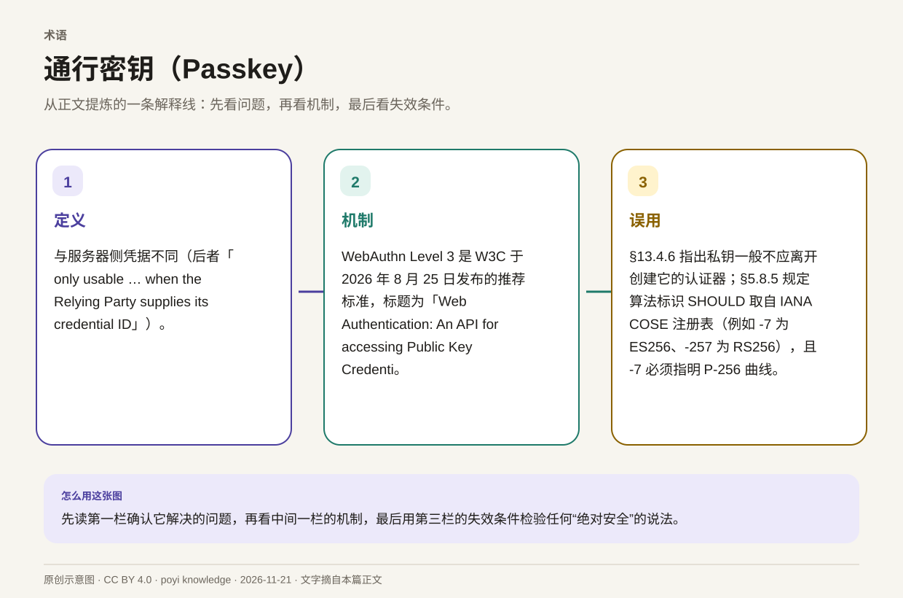

原理与机制
术语：通行密钥（Passkey）（Passkey (FIDO2/WebAuthn)）。WebAuthn Level 3 是 W3C 于 2026 年 8 月 25 日发布的推荐标准，标题为「Web Authentication: An API for accessing Public Key Credentials - Level 3」。§4 把认证器定义为「A cryptographic entity, existing in hardware or software, that can register a user with a given Relying Party and later assert possession of the registered public key credential, and optionally verify the user to the Relying Party」。同节把通行密钥（Passkey）列为客户端可发现凭据来源的别名，该条目的定义是「a public key credential source that is discoverable and usable in authentication ceremonies where the Relying Party does not provide any credential IDs」。

为什么重要
与服务器侧凭据不同（后者「only usable … when the Relying Party supplies its credential ID」），通行密钥可在空的 allowCredentials 参数下被发现并使用。§6.2.1 区分平台认证器与跨平台认证器，并据此得到 platform credential 与 roaming credential。§1.2.1 的消费者用例说明可以借助用户设备内置的认证器来「to provide phishing-resistant sign in using multi-device credentials (commonly referred to as synced passkeys)」；§4 还记载私钥「is expected to never be exposed to any other party, not even to the owner of the authenticator」。
应用与实例
注册流程在 §7.1 由调用方发起 create() 操作，认证流程在 §7.2 通过 get() 完成，服务器必须验证「C.type is the string webauthn.get」、challenge 等于 pkOptions.challenge 的 base64url 编码、origin 属于 relying party 预期、且 rpIdHash 是预期 RP ID 的 SHA-256 哈希。§4 把用户验证定义为认证器本地授权 makeCredential 与 getAssertion 调用的技术过程，可通过触摸加 PIN、口令或生物识别触发；§5.8.6 的取值是 required、preferred 与 discouraged。
边界与攻击面
§13.4.3 把随机挑战当作强制要求：「the challenges MUST contain enough entropy to make guessing them infeasible.Challenges SHOULD therefore be at least 16 bytes long」，并说明协议「dependent upon randomized challenges to avoid replay attacks」。§13.4.9 要求 relying party「MUST validate the origin member of the client data」，否则「could allow a malicious website to obtain valid credentials」。§13.4.6 指出私钥一般不应离开创建它的认证器；§5.8.5 规定算法标识 SHOULD 取自 IANA COSE 注册表（例如 -7 为 ES256、-257 为 RS256），且 -7 必须指明 P-256 曲线。
历史与背景
Level 3 由 Web Authentication Working Group 编写，前置页署名编辑者包括 Tim Cappalli、Akshay Kumar、Emil Lundberg、Matthew Miller 与 Nina Satragno 等；本版本是 2026 年 8 月 25 日的 W3C Recommendation，其 Previous Versions 一栏依次列出 2026 年 5 月 26 日的 Candidate Recommendation 快照与 webauthn-2、webauthn-1 两份推荐标准。§1 与 §3 依赖清单都说明该 API 扩展 W3C 的 Credential Management 接口；§5.1.10 提供让认证器得知凭据状态、以便更新、移除或隐藏错误与已撤销凭据的信号方法。
逐步示例与核验
定义检查模型
上位概念 → 区别特征 → 正例 → 反例 → 易混边界。正例必须落在外延内；反例必须刚好跨过边界；同义词不能代替定义。
参考出处
- Wikipedia search entry for 通行密钥（Passkey）. https://zh.wikipedia.org/w/index.php?search=%E9%80%9A%E8%A1%8C%E5%AF%86%E9%92%A5%EF%BC%88Passkey%EF%BC%89
- RFC 4949: Internet Security Glossary, Version 2. https://www.rfc-editor.org/rfc/rfc4949